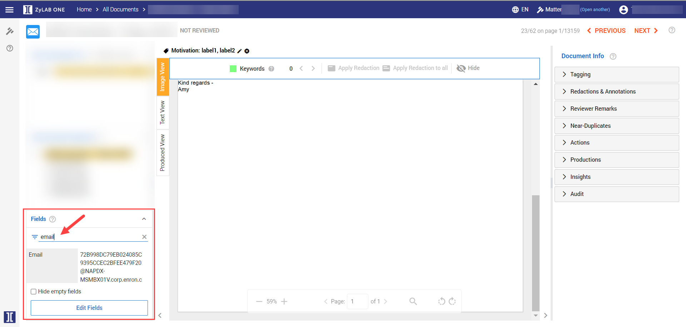
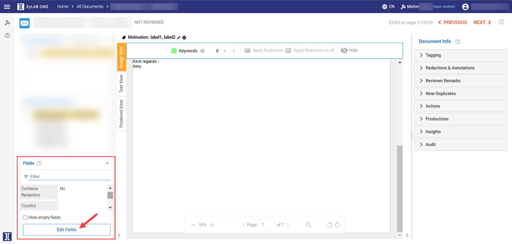
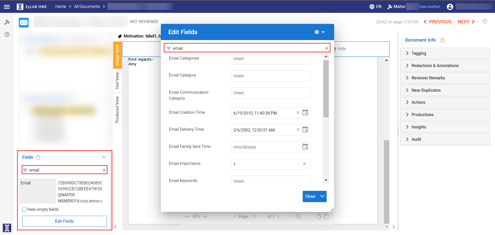
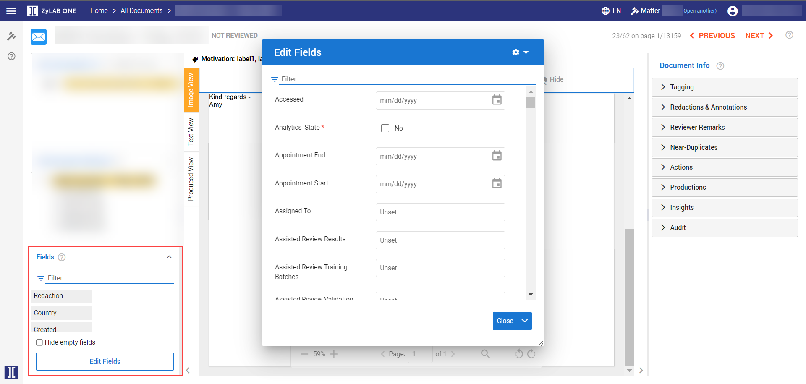
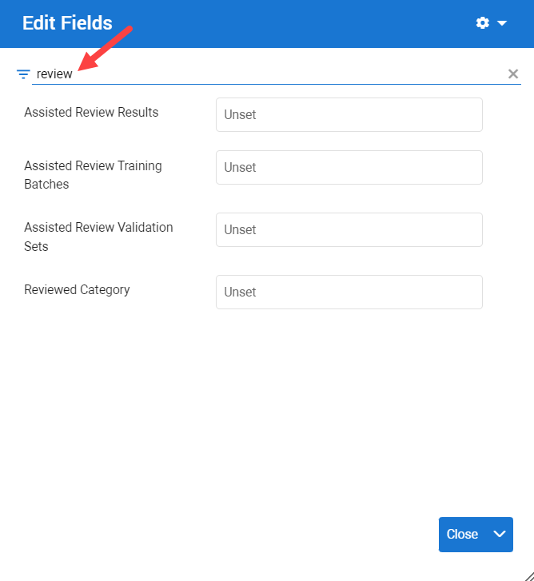
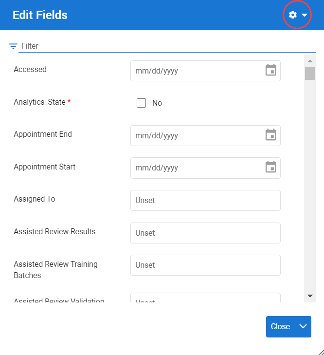
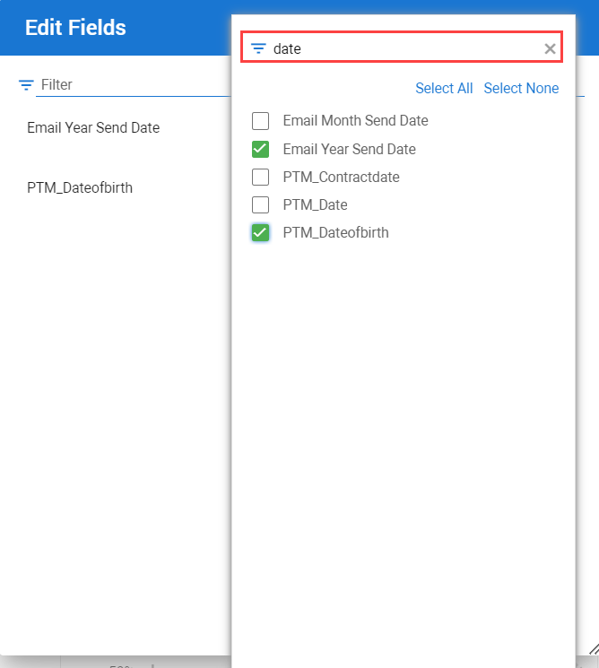
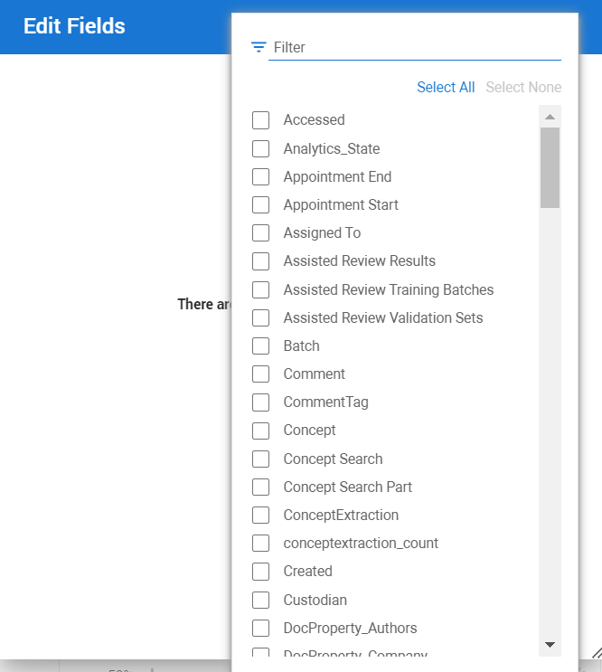
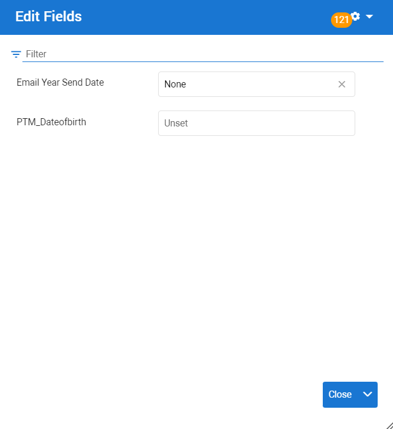

Note I: Administrators must assign users permission to edit fields in Role Management. If permission has not been granted, the Edit Fields option will be hidden.
Fields show the metadata of each document that is displayed in the Document View. Fields are auto-filled with the metadata values associated with the document. This metadata is sourced directly from the document properties, or generated by ZyLAB ONE. If there is no metadata corresponding to a particular Field, this Field remains empty.
Field Editing allows you to make changes to the metadata values assigned to each Field. Open the Edit Fields wizard to change the values that have been auto-filled or entered in one or more Fields. System Fields, required for the functioning of ZyLAB ONE, cannot be changed.
|
|
Note I: Administrators must assign users permission to edit fields in Role Management. If permission has not been granted, the Edit Fields option will be hidden. |
|
|
Note II: Edit Fields is used to edit the Field values of the document displayed. To batch update metadata values (or properties) of a large volume of documents and/or their families—see |
Select a document in the Document List, double-click to open it.
In Document View, navigate to the Fields section (located bottom-left).
Use the Filter search bar to find specific Fields. The search terms entered in the Filter search bar, remain in-place. This same Filter will be applied to any document opened in Document View.

Select Edit Fields to open the wizard.

|
|
Tip: You can move the Edit Fields wizard across your screen by dragging and releasing it. The wizard remains in-place; it will be displayed in the same location for any document opened in Document View. |
In the Edit Fields wizard, editable Fields are listed.
If you previously entered search terms in the Filter search bar in Document View, then this Filter is applied in the Edit Fields wizard. In Edit Fields, your filter selection of Fields will be displayed.

If you did not previously enter search terms in the Filter search bar in Document View, then all editable Fields will be displayed in Edit Fields .

To make changes to one or more Fields, you can:
Use the Filter search bar.

Open the Filter settings (located top-right).

By default, all Fields are selected. To find and select the Fields that you would like to make changes to, first click Select None to deselect all.

Use the Filter Search bar in Filter settings; enter key words to find the relevant Field(s).

Scroll through the full list in Filter settings to find the relevant Field(s).

When you have selected the Field(s), you can make the desired changes.

When finished, click Apply & Close. The changes made in Edit Fields, can be applied to other documents in Document View. If you wish to apply the edits to the current document and navigate to the previous or next document, select Apply and Previous Document or Apply and Next Document.

|
|
Note: Field Editing is recorded in the |